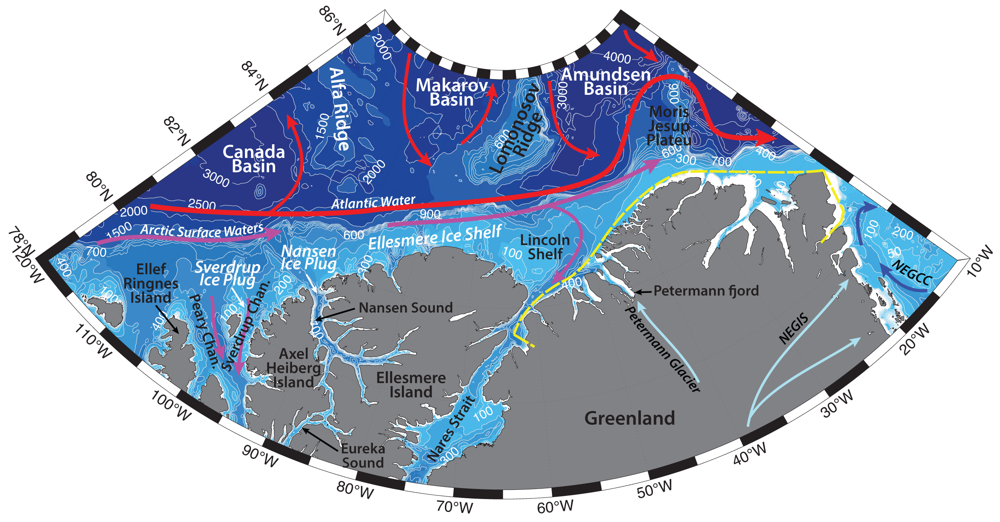

Schematic water circulation patterns and geographical place names in the northern Ellesmere and Greenland region. Adopted from Bailey (1957), Michel et al. (2006), Anderson and Macdonald (2015), Rudels (2019). Dashed yellow line marks the studied region.
Hydrography of the region is determined by the topography of the Greenland shelf, vast land fast ice and glacier ice tongues, polynya formation, continental runoff of the ice, freshwater, and terrigene material from the Greenland, atmospheric forcing and Arctic Surface waters, as well as influence of Atlantic waters and East Greenland Current.
Northern Greenland coast features vast and thick semi-permanent fast ice, that is known to block Greenland fjords and can build up over many years. It largely influences the freshwater content of the coastal waters, mass balance of the glaciers as well as the ecosystem of the region (Reeh et al., 2001).
Greenland glaciers are known to advance in the form of long ice tongues in the fjords and between the islands. Semi-permanent fast ice protects the ice tongues from calving (as the mechanical exposure is reduced, e.g. Marson et al., 2018), so that the major mass loss from the glaciers happens by intensive bottom melting, which can average to several meters of ice per year (about 35 km3/a) and, in turn, plays an important role in maintaining the semi-permanent fast-ice cover, contribute to the fresh and cold Arctic Surface Waters and bring terrigene matter. Kilometer-sized ice islands of sea and glacier ice are known to break up from the coast with intervals of several decades, and drifting icebergs are not common north of 70 ºN (Reeh et al., 2001).
However, during the recent warming trends in the Arctic (e.g. Onarheim et al., 2018), semi-permanent fast ice and floating glaciers are unlikely to exist in north and northeast Greenland (e.g. Reeh et al., 2001; Copland et al., 2007). As a consequence, the meltwater input to the ocean from the Greenland floating glaciers is likely to decrease, while the iceberg loss is likely to increase. This could have an impact on local sea-ice growth, and the extent of polynyas. Also, a significant increase of the iceberg density along the East Greenland coast is to be expected (Reeh et al., 2001). Icebergs can also alter the density and rates at which deep waters are formed, by influencing deep water convection, as they can be carried far away from the coast (e.g. Marson et al., 2018). In the ocean iceberg advection is affected by the atmospheric forcing and mainly by currents, both at the surface and mid-depth, depending on the size of the iceberg keel (as icebergs may extend for hundreds of meters down the water column). As such, icebergs, calved from the north of Greenland can be carried out of the Arctic and get entrained into the East Greenland Current (Marson et al., 2018).
Greenland Ice Sheet provides ice, freshwater, and terrigene material into the coastal waters on the Greenland shelf. A ~600-km-long Northeast Greenland Ice Stream (NEGIS) inflows into the Northeast Greenland region. It drains ~12% of the interior Greenland Ice Sheet via three fast-flowing marine-terminating outlet glaciers: Nioghalvfjerdsfjord Gletscher, Zachariae Isstrøm, and Storstrømmen Gletscher, which all accelerated and retreated after more than a decade of stability after 2006 (Larsen et al., 2018; Munchow et al., 2016).
Northeast Greenland coastal region used to be covered with perennial fast ice, known as the Norske Øer Ice Barrier (NØIB; Sneed and Hamilton, 2016). NØIB varied in size from year to year, and has been observed to extend, for example, ~140 km east of 79 °N and ~375 km from south to north. Since 2000 the NØIB has broken up during many summers, so that it doesn’t have a persistent core of multi-year fast ice anymore, and, as the summers continue to warm in the region, it is unlikely that the NØIB will retain a year-round, semi-permanent feature of the Northeast Greenland coast (Sneed and Hamilton, 2016). Northeast Greenland Counter Current (NEGCC), thought to be created by topographic steering on the Northeastern Greenland shelf in the Belgica Trough, contributes to the breaking up of the NØIB, by bringing warm Atlantic Water underneath it (Sneed and Hamilton, 2016). NEGCC can also mechanically affect the Ice Barrier, by advecting sea ice.
The Northeast Water (NEW) polynya can form on the Northeast Greenland shelf. It can reach 100 km long, stretching between Nordöstrundingen, Greenland’s most northeasterly cape and 79 °N. It is suggested to be formed and maintained because two ice barriers, one along the Ob Bank southeast of Nordöstrundingen and another, centered on Norske Øer, the NØIB, that shelter the region from the sea ice exiting through the Fram Strait and flowing southward. The ice barrier at the Ob Bank steeres the southward flowing sea ice in the EGC eastwards, away from the coast, while the NØIB blocks sea ice entrained in the Northeast Greenland Coastal Current from flowing northward into the polynya (Sneed and Hamilton, 2016).
East Greenland Current is the main conduit for waters exiting the Arctic Ocean. The EGC flows from the Fram Strait southwards to the Cape Farewell and carries cold and fresh Polar Surface Water (-1.9<T<0°C, also known as Arctic Surface Water), Atlantic Water both recirculated in the Basin (also known as Arctic Atlantic Water; T<~1°C; e.g. Rudels et al., 2002) and the Return Atlantic Water from the Fram Strait, and cold Polar Deep Water out from the Arctic Basin (e.g. Rudels et al., 2002). Arctic sea ice, advected by the Transpolar Drift across the Arctic Basin to the Fram Strait (with mean speeds can be about ~10 km per day; e.g. Hunkins, 1990) also gets exported by the East Greenland Current further southward through the western side of the strait (e.g. Lien & Trofimov, 2013). On its way along the Greenland slope the EGC interacts with waters from the Greenland and Iceland Seas and incorporates additional intermediate water masses.
Petermann Glacier in the Northwest Greenland has one of the largest floating ice shelfs in the Northern Hemisphere, being about ~50 km long. It resides in the Petermann fjord and in the last decade has lost about one-third of its area to several caving events, that produced large ice islands, that drifted into the Labrador Sea via Nares Strait and Baffin Bay. Through the Nares Strait the glacier is also connected to the Arctic Ocean (Munchow et al., 2016). The structure and extent of the ice shelf depend on the interactions of numerous processes, including atmospheric and oceanic forcing, sea ice and melange (the combination of sea ice and small iceberg fragments) in the fjord, and the dynamics of ice sheet flow across the grounding line as well as tides (Munchow et al., 2016)
Atlantic Water pass the Lincoln Shelf and can enter the Nares Strait by passing over a 290 m deep sill (Atlantic waters from the Baffin Bay to the south of Nares Strait are thought to not be able pass the southern sill of 220 m). While at the base of the ice shelf waters are the temperature of the freezing point – close to -2.2 ºC, the temperatures of the Atlantic Water, recirculated in the Arctic Basin, can be around 0.3 ºC and higher (e.g. Munchow et al., 2016). From the Nares Strait warm and salty (e.g. T = ~ 0.2 ºC, S = ~ 34.72) Atlantic Water can enter the Petermann Fjord across a 440 m deep sill, where they can contribute to melting of the glacier.